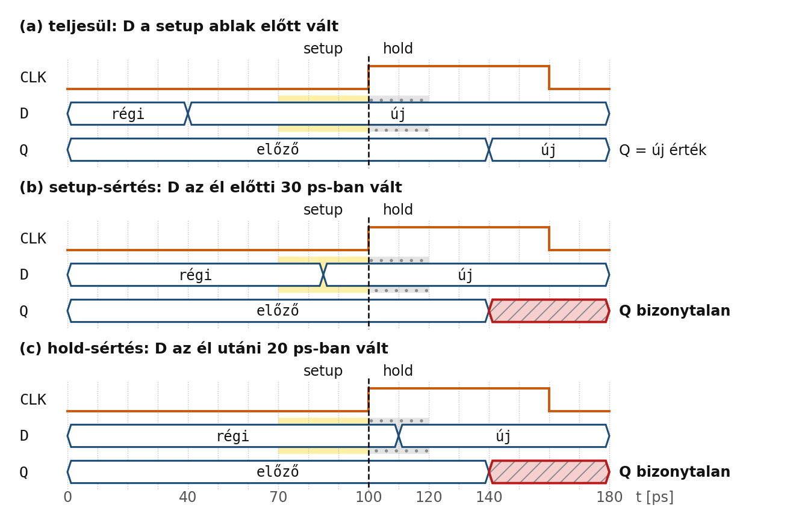

Egy regiszter, utána egy 32 bites összeadó, utána még egy regiszter. Mekkora lehet az órajel-frekvencia? A szemléltetés kedvéért legyen a kapukésleltetés 15 ps, a regiszterek saját költsége pedig összesen 70 ps. A ripple-carry összeadó 65 szintjével (Multiplexer, dekóder és összeadók) az áramkör alig 1 GHz-en megy, a carry-lookahead 11 szintjével több mint 4 GHz-en. Ugyanaz a funkció, ugyanazok a kapuk, négyszeres különbség – és ha az órajelet a határ fölé emeljük, az eredmény nem lassabb lesz, hanem hibás.
Ez az alfejezet megadja a határt kiszámító egyenlőtlenséget. A következő fejezetek erre építik az egyciklusú processzor kritikáját és a futószalag ötletét.
A szinkron digitális áramkör váltakozó rétegekből áll: flip-flopok (a regiszterek), köztük kombinációs logika, majd újra flip-flopok. Minden felfutó élen a regiszterek egyszerre kiadják új értéküket, a logika számolni kezd, és a következő élig be kell fejeznie, hogy az eredményt a fogadó regiszter beírhassa.
A számolás ideje a bemenettől a kimenetig vezető leghosszabb úton múlik. Ez a kritikus út (critical path). Az alábbi hatkapus hálózatban minden kapunak saját késleltetése van; figyeld meg a kapuk alatti beállási időket.
Az ábrán az u5 kapu 55 ps-nál már kész, de a kimenet
mégis csak 125 ps-nál: a végső ÉS a lassabbik bemenetére vár. A gyorsabb
ágat hiába gyorsítanánk, a frekvencia nem nő.
Definíció. Egy kapu (vagy hálózat) terjedési késleltetése (propagation delay, ) az a leghosszabb idő, amely a bemenet változásától a kimenet végleges beállásáig eltelhet. A szennyeződési késleltetése (contamination delay, ) az a legrövidebb idő, amely alatt a kimenet egyáltalán elkezdhet változni.
A két érték között a kimenet bizonytalan, átmeneti értékeket is felvehet (ezt látta a ripple-carry animáció). Egy hálózatban:
A kritikus utat a hálózat topologikus sorrendjében kereshetjük meg, kapunként egyetlen szabállyal:
Ez azt jelenti, hogy egy kapu csak a legkésőbb érkező bemenete után kezdhet dolgozni. A végponttól visszafelé mindig azt a bemenetet követve, amelyik a maximumot adta, megkapjuk magát az utat. A legrövidebb útnál ugyanez a -nel és a értékekkel.
A flip-flop sem ideális. Négy jellemzője van:

Az ábra (b) és (c) esetében a a sárga setup-, illetve a pontozott hold-ablakon belül vált. Ekkor a flip-flop nem garantálja, hogy a régi vagy az új értéket veszi át, és akár metastabil állapotba is kerülhet.
Kövessünk egy adatot a küldő regisztertől a fogadóig. Az élnél indul, múlva jelenik meg a küldő -ján, a logikán legfeljebb alatt halad át, és a fogadó -jén a következő él előtt legalább idővel meg kell érkeznie:
A maximális frekvencia . Az egyenlőtlenség azt mondja, hogy a ciklusidő a flip-flopok „fix költségéből” és a leghosszabb logikai útból tevődik össze.
A hold feltétel a másik irányból figyel: az új adat a küldő regiszterből ne érjen el a fogadóhoz túl korán, még ugyanannak az élnek a hold ideje alatt:
Ebben nem szerepel . Ha a hold sérül, lassabb órajel nem segít; a rövid útba késleltető puffereket kell tenni.
Az órajel nem egyszerre ér minden flip-flophoz: a két regiszter élei közötti különbség az órajel-elcsúszás (clock skew), . A legrosszabb irányt feltételezve mindkét egyenlőtlenség szigorodik:
Setupnál az a baj, ha a fogadó él korábban jön; holdnál, ha később (a küldő már új adatot ad, miközben a fogadó még a régit írná be). A skew a ciklusidőből vesz el, és hold-sértést is okozhat; ezért tervezik gondosan az órajel-hálózatot.
Továbbvitt eredmény. Regiszter–logika–regiszter útra a ciklusidő (skew esetén ), a hold feltétel a ciklusidőtől független; . Ezt Az egyciklusú gép teljesítménye és korlátai, A futószalag elve: átbocsátás és késleltetés és a Pipeline-szimulátor és mélyebb futószalagok használja.
Ha egy logika túl lassú, vágjuk szakaszra, közéjük flip-flopokkal. A ciklusidőt a leghosszabb szakasz szabja meg:
Legyen az eredeti logika 600 ps, ps. Egyben ps; két egyenlő félre vágva 370 ps, a frekvencia 1,81-szeres, nem kétszeres. A regiszterek fix költsége minden szakaszban megjelenik, ráadásul egy adat végigfutása -re nő (670 helyett 740 ps). Ha a vágás egyenetlen (250 + 350 ps), ps. A gyorsítás tehát az átbocsátásra vonatkozik, a késleltetés romlik – ez a vasegyenlet (Végrehajtási idő, CPI és a vasegyenlet) tényezőjének csökkentése, amelyet a futószalag fog kihasználni.
Egy gombnyomás vagy egy másik órajelhez tartozó jel bármikor változhat, akár éppen a setup–hold ablakban. A flip-flop ekkor metastabil állapotba kerülhet: a belső bistabil kör két állapota között „egyensúlyozik”, és véletlenszerű, elvben korlátlan, de egyre valószínűtlenebb ideig tart, mire eldől. A védekezés a szinkronizáló: két sorba kötött flip-flop. Az elsőnek egy teljes ciklus áll rendelkezésére a beállásra, mire a második mintát vesz. A hiba valószínűsége az engedett idővel nagyjából exponenciálisan csökken, de nullára sosem; a matematikai modellt itt nem tárgyaljuk.
A kapu késleltetése a kapacitás feltöltésének ideje. Kisebb tápfeszültségnél a tranzisztor kevesebb áramot ad, a feltöltés lassabb, így nő, csökken. Egy gyakran használt közelítő modell szerint a késleltetés a kifejezéssel arányos, ahol a küszöbfeszültség, pedig technológiafüggő, 1 és 2 közötti kitevő (ellenőrizendő: konkrét gyártástechnológiára). Szemléltető V, értékekkel 1,0 V-ról 0,8 V-ra lépve kb. 19%-kal esik, a dinamikus teljesítmény (Boole-algebra, kapuk és a CMOS-tranzisztor) viszont nagyjából a felére. Ez a csere a processzorok energiagazdálkodásának alapja.
Továbbvitt eredmény. Kisebb tápfeszültségen nagyobb a kapukésleltetés, ezért kisebb a maximális frekvencia, míg a dinamikus teljesítmény a szorzattal csökken. Erre épül a DVFS, a Dennard-skálázás vége és a sötét szilícium.
Az első ábra hálózata, flip-flop-adatok: ps, ps, ps, ps. A kapuk szennyeződési késleltetése a terjedési 60%-a.
1. lépés: beállási idők, topologikus sorrendben (a bemenetek 0-kor változnak):
| kapu | bemenetek (idő) | beállás [ps] | legkorábbi [ps] | ||
|---|---|---|---|---|---|
| u1 (NOT) | c (0) | 15 | 15 | 9 | 9 |
| u2 (AND) | a, b (0) | 30 | 30 | 18 | 18 |
| u3 (OR) | u1 (15), d (0) | 35 | 50 | 21 | 21 |
| u4 (XOR) | u2 (30), u3 (50) | 45 | 95 | 27 | 45 |
| u5 (NAND) | u2 (30), d (0) | 25 | 55 | 15 | 15 |
| y (AND) | u4 (95), u5 (55) | 30 | 125 | 18 | 33 |
A legkorábbi oszlopban a szabály fut: például : .
2. lépés: kritikus út visszafelé: u4 (95) u3 (50) u1 (15) c. A legrövidebb út: u5 .
3. lépés: ciklusidő. ps, tehát GHz.
4. lépés: hold. ps: teljesül, 38 ps tartalékkal.
5. lépés: 50 ps skew mellett ps (4,08 GHz), a hold pedig ps: sérül. Ezen az órajel lassítása nem segít.
Az archkit.logic.Netlist kapuhálózatot épít, kiszámítja
a beállási időket, a kritikus utat és a legrövidebb utat; a
min_period és a hold_slack a két
egyenlőtlenség.
import sys; sys.path.insert(0, "code")
from archkit import logic as L
net = L.Netlist(["a", "b", "c", "d"])
for name, kind, ins, tpd in [("u1", "NOT", ["c"], 15), ("u2", "AND", ["a", "b"], 30),
("u3", "OR", ["u1", "d"], 35), ("u4", "XOR", ["u2", "u3"], 45),
("u5", "NAND", ["u2", "d"], 25), ("y", "AND", ["u4", "u5"], 30)]:
net.add(name, kind, ins, delay=tpd, cdelay=round(0.6 * tpd))
tpd, path = net.critical_path("y")
tcd = net.earliest()["y"]
print("kritikus út:", " -> ".join(path), f"= {tpd} ps; t_cd = {tcd} ps")
for skew in (0, 50):
tc = L.min_period(40, tpd, 30, skew)
print(f"skew {skew:2d} ps: t_c >= {tc} ps f_max = {1000 / tc:.2f} GHz"
f" hold-tartalék = {L.hold_slack(25, tcd, 20, skew)} ps")kritikus út: c -> u1 -> u3 -> u4 -> y = 125 ps; t_cd = 33 ps
skew 0 ps: t_c >= 195 ps f_max = 5.13 GHz hold-tartalék = 38 ps
skew 50 ps: t_c >= 245 ps f_max = 4.08 GHz hold-tartalék = -12 psAz eredmény egyezik a kézi számolással. A motiváció összeadói és a futószalag előzetese:
for name, add in (("ripple-carry", L.ripple_add), ("carry-lookahead", L.cla_add)):
levels = add(0, 0, 32)[2]
tc = L.min_period(40, 15 * levels, 30)
print(f"{name:16s} {levels:2d} szint t_c = {tc:4.0f} ps f_max = {1000 / tc:.2f} GHz")
print("k t_c[ps] gyorsítás késleltetés[ps]")
base = L.min_period(40, 600, 30)
for k in (1, 2, 4, 8, 16):
tc = L.min_period(40, 600 / k, 30)
print(f"{k:2d} {tc:6.1f} {base / tc:8.2f}x {k * tc:10.1f}")
def rel_delay(v, vth=0.3, gamma=1.3):
return v / (v - vth) ** gamma
f = rel_delay(1.0) / rel_delay(0.8)
print(f"0,8 V: f_max {f:.3f}-szoros, P_dyn {0.8**2 * f:.3f}-szoros")ripple-carry 65 szint t_c = 1045 ps f_max = 0.96 GHz
carry-lookahead 11 szint t_c = 235 ps f_max = 4.26 GHz
k t_c[ps] gyorsítás késleltetés[ps]
1 670.0 1.00x 670.0
2 370.0 1.81x 740.0
4 220.0 3.05x 880.0
8 145.0 4.62x 1160.0
16 107.5 6.23x 1720.0
0,8 V: f_max 0.807-szoros, P_dyn 0.517-szorosA 16 szakaszos vágás csak 6,2-szeres gyorsítást ad, és az adat végigfutása több mint két és félszeres: a regiszterek költsége egyre nagyobb hányadot tesz ki.
ripple_netlist függvénnyel, és keresd
meg a kritikus utat. Ezután számítsd ki, hány szakaszra kell vágni, hogy
15 ps-os kapukkal elérd a 3 GHz-et
(
ps, egyenletes vágást feltételezve).A maximális órajelet a regiszterek közötti leghosszabb kombinációs út szabja meg: (+ skew); a kritikus utat topologikus sorrendben, a bemenetek beállási idejének maximumával keressük. A hold feltétel (+ skew) független a ciklusidőtől, lassítással nem javítható. A logika feldarabolása csökkenti -t, de a flip-flopok fix költsége miatt kevesebbet, mint a szakaszszám, és egy adat késleltetése nő. Aszinkron jelnél a metastabilitás ellen szinkronizáló véd. Kisebb feszültség nagyobb késleltetést, kisebb -ot, de a szerint jóval kisebb teljesítményt ad.
1. feladat. ps, GHz.
2. feladat. : sérül, 5 ps hiányzik. Legalább 5 ps késleltetést (puffert) kell a rövid útba tenni; az órajel lassítása nem segít.
3. feladat. u2 = 80; u3 = 50; u4 = ; u5 = ; y = ps. A kritikus út most u2 u4 (a bemenetről ugyanilyen hosszú). ps, GHz.
4. feladat. Egyben: ps. Három szakasszal: ps, gyorsítás , késleltetés ps. Egyenletesen: ps, gyorsítás , késleltetés 1080 ps.
5. feladat. , tehát , kapu.
6. feladat.
net32 = L.ripple_netlist(32)
delay, path = net32.critical_path()
print(f"kritikus út: {delay} szint, {path[0]} ... {path[-1]}")
logic_ps = 15 * delay
k = 1
while L.min_period(40, logic_ps / k, 30) > 1000 / 3:
k += 1
print(f"logika {logic_ps} ps -> {k} szakasz, t_c = {L.min_period(40, logic_ps / k, 30):.1f} ps")kritikus út: 65 szint, a0 ... c32
logika 975 ps -> 4 szakasz, t_c = 313.8 psps kell, azaz szakaszonként legfeljebb 263 ps logika. A 975 ps-os út ezért négy szakaszra vágandó (háromnál 325 ps logika jutna egyre), és a valóságban a vágás csak kapuhatárokon, nagyjából egyenletesen lehetséges.
7. feladat. Logika nélkül , a feltétel . A flip-flopokat rendszerint úgy tervezik, hogy , de ha a fogadó órajele a skew miatt elég késve érkezik (), az új adat még a fogadó hold ablakában átér, és egy ciklus helyett két regiszteren halad át. Javítás: puffer az útba vagy a skew csökkentése.